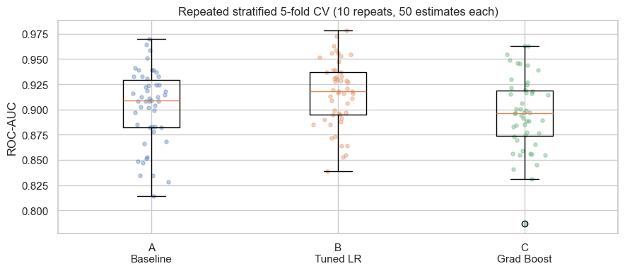
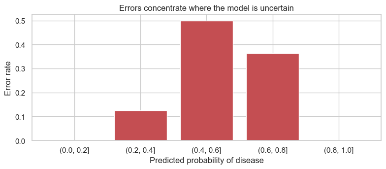
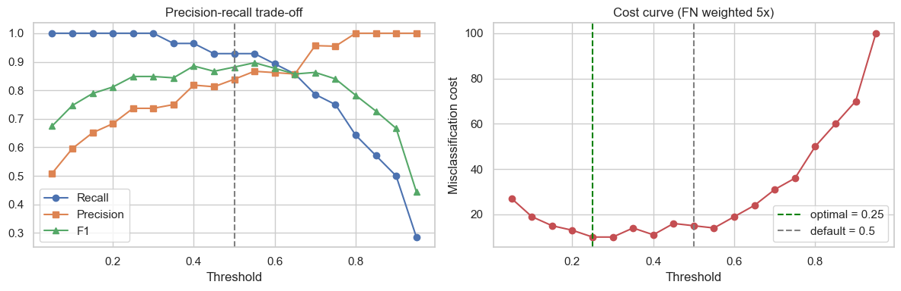

| Model | Accuracy | Recall | ROC-AUC |
|---|---|---|---|
| A. Baseline logistic regression | 0.869 | 0.929 | 0.951 |
| B. Tuned LR + feature engineering | 0.885 | 0.929 | 0.968 |
| C. Tuned gradient boosting highest accuracy | 0.902 | 0.867 | 0.953 |


| Threshold | Recall | Missed | Acc. |
|---|---|---|---|
| 0.50 default | 0.929 | 2 | 0.885 |
| 0.25 chosen | 1.000 | 0 | 0.836 |

requires_review flag
Any prediction between 0.2 and 0.8 returns with a reason and routes to a clinician